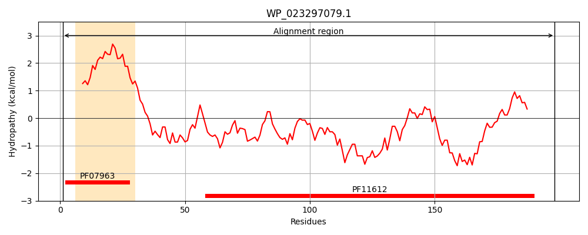
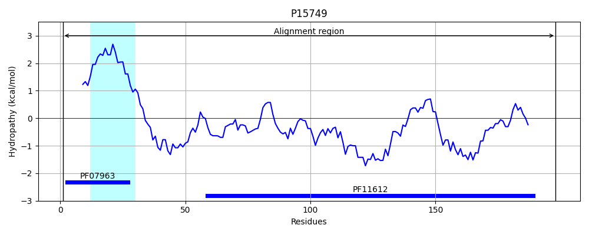
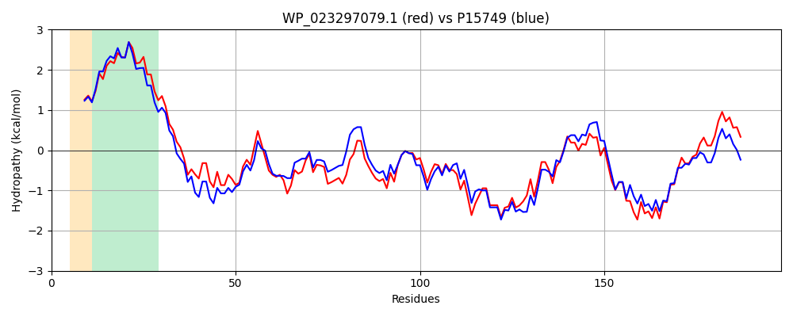

Hit Accession: P15749
Hit TCID: 3.A.15.1.1
Hit Description: gnl|BL_ORD_ID|9184 gnl|TC-DB|P15749|3.A.15.1.1 General secretion pathway protein J precursor (Pullulanase secretion protein pulJ) - Klebsiella pneumoniae.
Mach Len: 198
e:0.000000
Query TMS Count : 1
Hit TMS Count: 1
TMS-Overlap Score: 0.950000
Predicted Substrates:CHEBI:36080;protein
BLAST Alignment:
Score: 716 , Bit scores: 280 bits, E-value: 2.5e-97, Alignment length: 198, Percentage identity: 72
Query: 1 MITRMRGFTLIETLLALAILAVLSAAAVMVLQNVIRADGLTREKSQQIAALQRAFRQIADDVTHIIPRRARNSDTLFFAGRFQLQSDDWGLAFSRSGWPNPLGILPRSEIQNVSYRLRQQQLERLSFDQQDPLTGSQPTVRVVLREVTAFRLRFYADGRWQETWDRSQTLPQGLEITLTLANSGEITRLFLLTPGGSQ 198
MI R GFTL+E LLALAILA LS AAV VLQNV+RAD LTR+KS ++ ALQ+ F Q+A D + IIPRR+R+S +LFFAGRFQL SDD +AFSR+GWPNPLG+LPRSEIQNVSYRLR QLERL++DQQDPL GSQPTV +VLR+V AF LRFYA GRWQ+ W ++QTLPQGLE+TLTL GEI RLFLLTPG S+
Sbjct: 1 MIRRSSGFTLVEMLLALAILAALSVAAVTVLQNVMRADTLTRDKSGRMQALQQTFSQMAADFSQIIPRRSRDSASLFFAGRFQLGSDDGAIAFSRNGWPNPLGLLPRSEIQNVSYRLRGSQLERLNYDQQDPLPGSQPTVTIVLRDVRAFGLRFYASGRWQDEWQQAQTLPQGLEVTLTLEPYGEIRRLFLLTPGDSR 198 | Protein Hydropathy Plots: |
|---|
|  |  |
Pairwise Alignment-Hydropathy Plot:
|
|---|
|  |